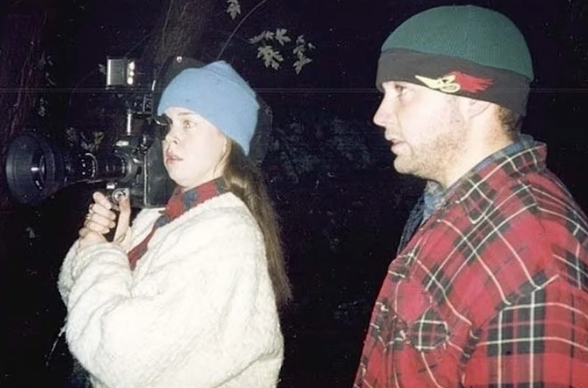
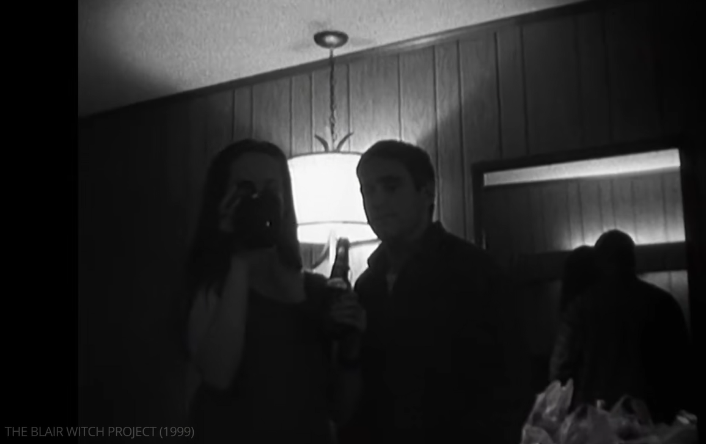
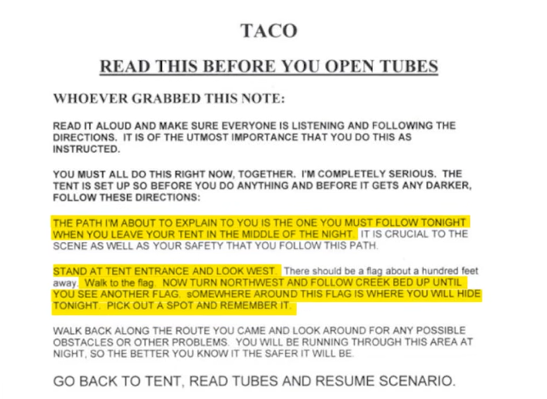

<!DOCTYPE html>
<html>
    <head>
        <meta charset="utf-8" />
        <title>low-budget</title>
        <link rel="stylesheet" href="style.css">
    </head>
    <body>
        <div class="js-container"></div>
    
        <script src="https://unpkg.com/supersimpledev/react.js"></script>
        <script src="https://unpkg.com/supersimpledev/react-dom.js"></script>
        <script src="common.jsx" type="text/babel"></script>
        <script src="https://unpkg.com/supersimpledev/babel.js"></script>
        <script type="text/babel">
            const title = createHeader("low-budget filmmaking", "marketing")
            
            const bts = (
                <div class="message-image-content"> 
                    
                    <p><em>Heather Donahue recorded most of the film</em></p>
                </div>
            )

            const cannibal = (
                <div class="message-image-content"> 
                    
                    <p><em>All cameras in the film were digetic, meaning no effort was spent attempting to hide them</em></p>
                </div>
            )

            const stickman = (
                <div class="message-image-content"> 
                    
                    <p><em>Directors left notes for actors at each location</em></p>
                </div>
            )

            const paragraph_1 = (
                <p class="message-box">
                    The low-budget production of <em>The Blair Witch Project</em> is central to understanding why the film looks and feels so different from the mainstream horror surrounding it. Made for approximately $60,000, the film emerged at a time when developments in video technology were beginning to make filmmaking more accessible to independent filmmakers. Turner positions <em>The Blair Witch Project</em> within this technological shift, describing it as a “glowing example” of what could be achieved through “cheap emerging technology” and a “‘less is more’ approach” (7). Rather than attempting to conceal the limitations of its production, the film incorporated them into its form. Its low budget is therefore not simply a financial fact about how the film was made; it becomes part of how the audience is encouraged to understand what they are seeing.
                </p>
            )

            const paragraph_2 = (
                <p class="message-box">
                    The use of home-video technology is particularly important to this process. Despite the filmmakers initial intentions to shoot almost exclusively on 16mm film, producer Gregg Hale suggested introducing a $750 Hi-8 video camera as a more financially feasible alternative. Myrick recalls that they eventually embraced the idea because “video is cheap” and instructed the actors to “shoot everything” (Myrick and Sánchez). The Hi-8 footage could plausibly belong to Heather, Joshua, and Mike within the world of the film, allowing the technology to become part of the narrative itself. The cameras existed in the film as opposed to standard films where the cameras are intentionally out-of-frame. The three performers carried the cameras themselves as they moved through the woods, receiving instructions from the filmmakers at different points throughout the eight-day shoot, establishing the idea that the footage had been recorded during their disappearance. 
                </p>
            )

            const paragraph_3 = (
                <p class="message-box">
                    The production process further develops this sense of authenticity. Actors worked from an outline rather than a conventional shooting script, allowing much of the dialogue and action to develop during filming. As one actor recalled, “starting on the second night there was a building of how much they were going to torture us.” This uncertainty contributed to the film's realistic and documentary-like aesthetic.The resulting footage contains unstable framing and moments of confusion that would usually be corrected during a controlled production. The shifts between colour Hi-8 footage and black-and-white 16mm makes the footage appear to come from different sources, while the lack of a conventional music score leaves the audience with the sounds of the forest and the characters’ reactions. Richardson argues that the film’s “absence of music” helps maintain its “verite feel” (134). These choices make the footage appear less constructed and encourage the audience to read it as a record of events rather than a conventional horror film. 
                </p>
            )
            
            const paragraph_4 = (
                <p class="message-box-floating">
                    The film also belongs to a longer history of low-budget horror. Earlier films such as <em>Psycho</em> (1960) demonstrated that horror could achieve significant effects without the scale of conventional Hollywood production. <em>Cannibal Holocaust</em> (1980) pushed this further by presenting fictional footage through a documentary form, with Waddell identifying its use of “found footage” as an important part of its approach (290). <em>The Blair Witch Project</em> developed these ideas through the consumer video technology available in the late 1990s. Rather than simply reducing production costs, the technology allowed the filmmakers to make the camera and its limitations part of the film itself. This became important to the later development of found-footage horror, with Clansen arguing that <em>The Blair Witch Project</em> “launched” the subgenre into mainstream cinema through “simple cinematic techniques” that created an “authenticity aesthetic” (135). Rather than inventing low-budget or found-footage horror, <em>The Blair Witch Project</em> brought these existing techniques together with accessible technology and demonstrated how they could produce a different kind of horror for a mainstream audience. 
                    <br /> <br />
                    Ultimately, <em>The Blair Witch Project</em> subverted the conventions of mainstream horror by weaponising its micro-budget to create a convincingly terrifying narrative. Its limited technology became part of the horror itself, replacing spectacle with uncertainty and allowing the audience’s imagination to fill what the camera could not show. Rather than making the film feel less cinematic, these limitations made its horror feel more immediate and real, demonstrating how low-bidget production could reshape both the conventions of the genre and the way audiences experienced fear. 
                </p>
            )

            const app = (
                <>
                    {title}
                    <div class="message-board">
                        <div class="message-row">
                            {paragraph_1}
                            {bts}
                        </div>
                        <div class="message-row">
                            {cannibal}
                            {paragraph_2}
                        </div>
                        <div class="message-row">
                            {paragraph_3}
                            {stickman}
                        </div>
                        {paragraph_4}
                    </div>
                </>
            )

            const container = document.querySelector('.js-container')
            const root = ReactDOM.createRoot(container)
            root.render(app)
        </script>
    </body>
</html>